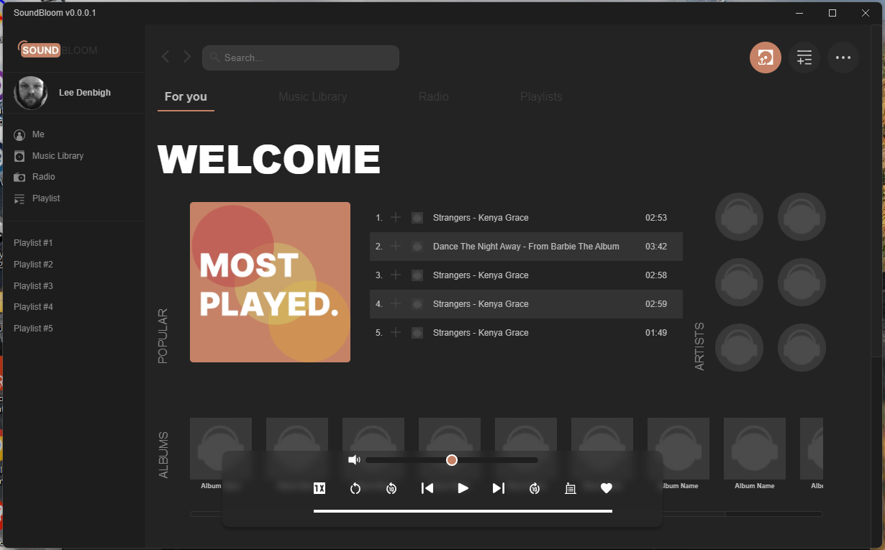
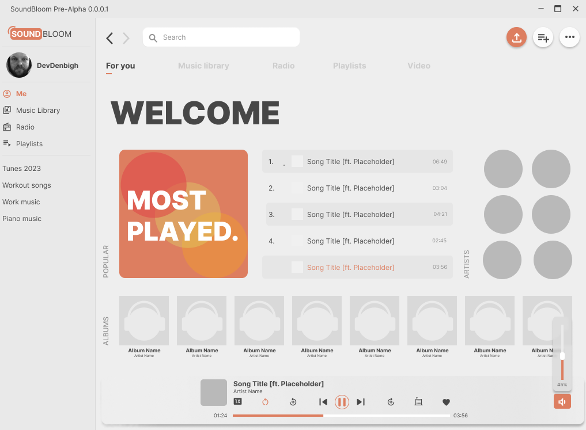

As a self-taught developer with a strong passion for digital creativity, I have cultivated a rich foundation in design & development since 2008. My journey as a hobbyist has allowed me to develop a deep understanding of HTML, CSS, some JavaScript, some JS Frameworks (Vue, Electron, NodeJS, etc), PHP (Wordpress theme design), which I have applied in creating engaging, user-centric websites and webapps.
I am now eager to transition from a hobbyist to a professional role in the web design/development industry. My aim is to join a team where I can bring my unique blend of creativity and technical skills to the table, contributing to innovative projects while continuing to grow and evolve as a designer. I am particularly excited about opportunities that allow me to leverage my passion for making visually appealing content in a collaborative, dynamic professional setting.
Software Engineering 2009 - 2011
Soundbloom: Developed a local music player using the Electron.js framework. Focused on the user-experience and visual appeal. This was my first webapp and enjoyed learning something new.
I used figma to design the app, and then recreated it from scratch using HTML, CSS and JS.
